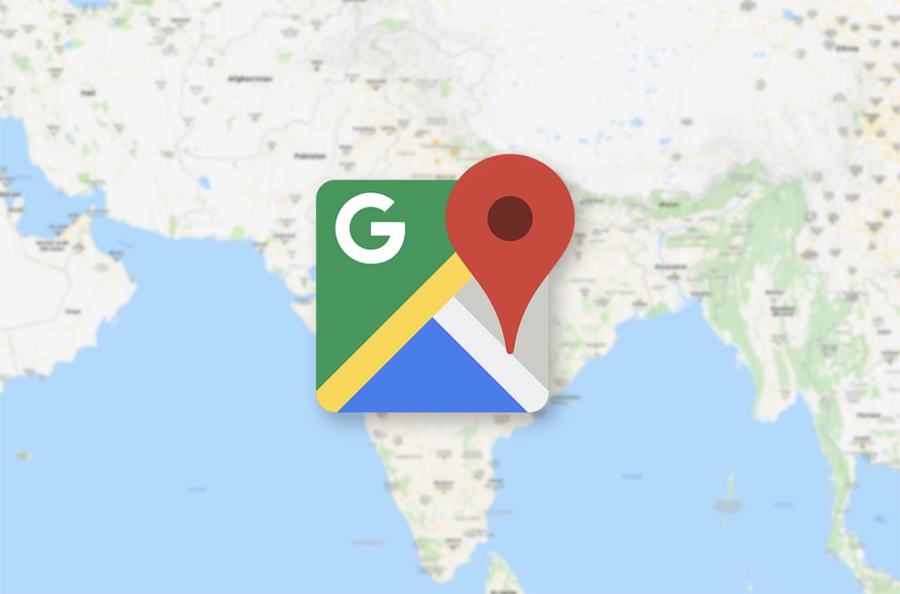
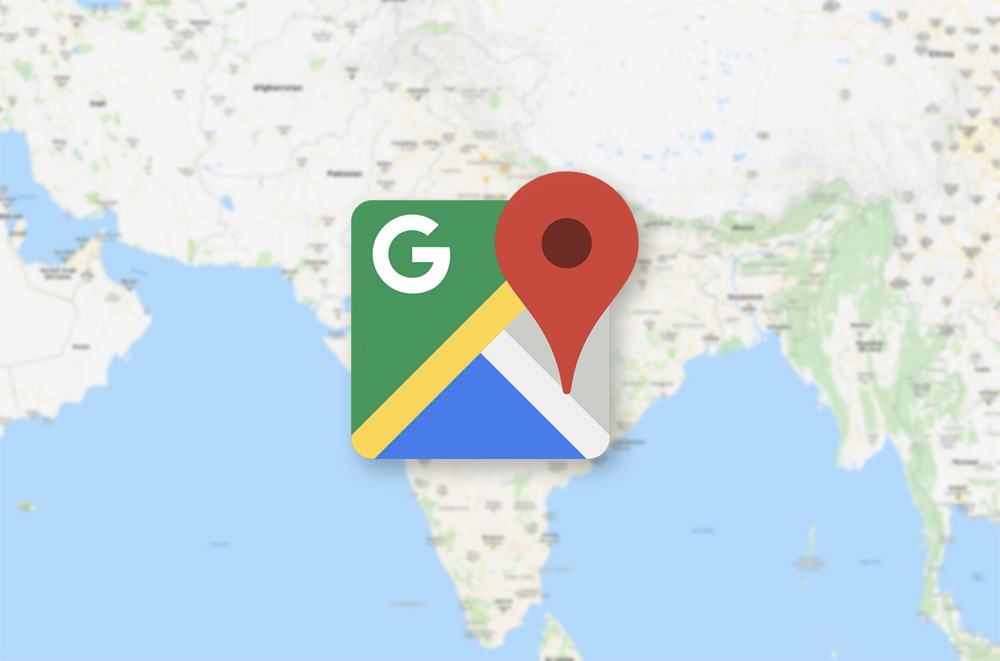

The goal of the website is to increase the revenue of the clothing business ,by 20 % in 3 months, by promoting and selling the items ,the shop produces. By attracting the customers and increasing the number of both old and new customers coming to the shop
Run the website for a few months. Count the nubmer of new and old customers before uploading the website then, count the nubmer after. There should be a sustantial increase in both the nubmer of old and new cutomers compared to the months before the website was uploaded.
The website's main focus is to attract young adults and families around the age of 18 – 35. The website uses fun and eye catching colors and aslo have interactive features and images.
These below are images ,resized with the use of the (Fotor) website . To see the orginal size and source click the pictures below.